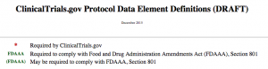
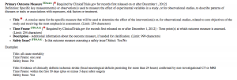

There seems to be some resistance and misunderstanding from journal editors and the academic community on outcome switching, so we thought it would be useful to give an overview of what various authoritative bodies have to say on the topic. In this series, we will cover ICMJE, CONSORT, the FDA, and the Word Of God. Today, we look at the FDA.
In the US, the Food and Drug Administration (FDA) regulate drugs. Some background is required to understand what the FDA say on drug regulation and to make it clearer for everyone I have bolded the MUST or MANDATORY items required to comply with these regulations.
The legislation that new drugs have to comply with is the FDA Amendments Act (FDAAA), Section 801 . This important piece of legislation states that either the sponsor or the PI is responsible for registering the clinical study. There MUST be a responsible party for each applicable clinical trial, who is accountable for what appears in the registry, and for each clinical trial they MUST register the trial and submit the results within one year of the trial being completed.
The Act applies to trials with one or more sites in the US; conducted under a new drug or device application; or involving an intervention manufactured in the US. On the FDA website, the Protocol Data Element Definitions specifies the elements that MUST be reported in the registry to comply with the Act.

Importantly, the primary outcome measure is a MANDATORY requirement of the registry, and is required to comply with FDAAA Section 801. And even more important, as this issue has come up many times in response to COMPare, is the MANDATORY requirement for the time-point at which the outcome is assessed to be included in the registry entry. This is only required by ClinicalTrials.gov for records first released on or after December 1, 2012.

Further to this, the secondary outcomes measure is also a MANDATORY requirement, along with the time-point and description.
It is also worth noting that the FDA website tells us that staff members at ClinicalTrials.gov review study records after they are released and before publication. Apparently – as I don’t know if what comes next actually happens – this review focuses on “apparent validity, meaningful entries, logic and internal consistency, and formatting.” Now if all this happened, then it would ensure outcome measures were correctly defined in the trial registry entry.
Therefore, to comply with FDA regulations, which is pretty stiff in its penalties, you MUST register and report the primary outcomes with adequate time-points and descriptions.
However, a word of caution: section 801 also requires that drug and device clinical trials, done in the US, MUST report their results within 1 year of completion on the website ClinicalTrials.gov. And if you don’t report your results, you will be fined for every day that you don’t. However, to date this fine has never been imposed. This is odd when you consider that at least half of all trials don’t report their summary results in this window of opportunity.
It is likely that registry entries which are incorrect, fuzzy or missing details are not being noted or corrected at the outset by the FDA; adding to the confusion and possibly undermining the value of the registry entry, which can’t be helping the ongoing issue of outcome switching.
Carl Heneghan
Dr. Bernard Carroll, MBBS, PhD, FRCPsych. Professor and Chairman Emeritus, Department of Psychiatry and Behavioral Sciences, Duke University Medical Center, Durham, NC, is soliciting signatures for a petition to the U.S. Congress addressing at least one part of the FDA-NIH interface problem that you identify. He writes:
Colleagues,
I am distributing a petition to the US Congress that I have helped to write over the summer. It is called “Truth in Research Labeling.” Here is the link for you to read it: http://tinyurl.com/hja4ccy. Feel free to sign it after reading the Executive Summary if you are too busy to read the whole thing. Thanks to the Lown Institute in Boston for sponsoring the on-line presence of this petition.
This petition aims to clean up the reporting of clinical trials by getting the FDA on the same page as NIH (ClinicalTrials.gov). The graphic below says it well – a picture is worth a thousand words. Right now, FDA and NIH don’t talk to each other, so a lot of dubious claims – or worse – go unregulated into the medical journals.
https://assets.change.org/photos/3/tg/xl/CBtgxliSeblIOgV-800×450-noPad.jpg?1475085058
This petition is unlike most petitions to the Congress. It goes beyond simply making claims. It cites as evidence for these claims the best available scholarship. The petition also provides suggested language for amending Section 801 of the Public Health Service Act to bring about the desired change.
The issues we address affect the integrity of biomedical science and, ultimately, the quality of the medical care that we all receive. If the Congress responds to the petition by adopting the changes of law that we propose, all of us will benefit . . . most of all our patients.
If you agree with the thrust of the petition, please sign on to lend your support . . . and pass it around through your networks. We are hoping that Senator Elizabeth Warren will at some point embrace and sponsor this initiative as part of her consumer protections advocacy agenda. Those of you who are based outside the USA may still sign it – and perhaps it can serve as a template for similar efforts in your own countries.